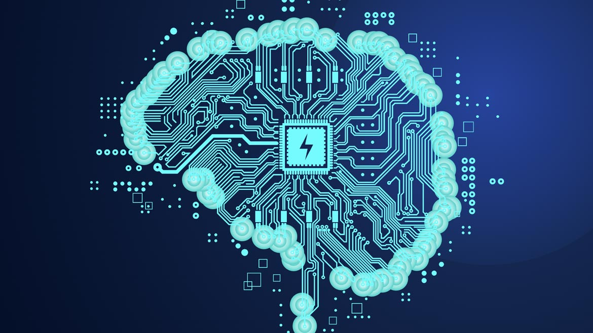

The Advancement in Cybersecurity with Artificial Intelligence
The chosen technology for our focus is the integration and advancement of Artificial Intelligence (AI) in cybersecurity. In today’s digital landscape, where online threats are rapidly increasing in complexity and scale, AI plays a vital role in enhancing security measures. Traditional cybersecurity methods often struggle to keep pace with the dynamic nature of these threats, but AI has the capability to bridge this gap through its unique strengths. By analyzing vast amounts of data in real time, AI can detect patterns and anomalies that may signal potential security breaches or vulnerabilities. Its ability to learn and adapt enables it to recognize and respond to emerging risks more effectively than static, rule-based systems. Furthermore, AI can automate complex and time-consuming tasks, such as monitoring network activity, identifying malware, or responding to phishing attempts, freeing up human cybersecurity experts to focus on higher-level strategic efforts. In essence, AI not only strengthens cybersecurity defenses but also significantly accelerates response times. It creates a proactive approach, allowing organizations to predict and mitigate threats before they escalate. The combination of speed, precision, and adaptability that AI brings makes it an indispensable tool in combating the ever-growing challenge of online security.
AI is widely used in various areas of cybersecurity, including network protection, fraud prevention, cloud security, and system access management. These applications are critical in addressing the increasing challenges posed by cyber threats in today's interconnected world. By implementing AI-powered solutions, businesses can strengthen their defenses against malicious activities, ensuring that their networks and systems remain secure. For example, AI helps protect networks by continuously monitoring for suspicious activity and responding to potential breaches in real-time. In fraud prevention, it analyzes transaction patterns to identify unusual behaviors that may indicate fraudulent activities, such as credit card fraud or identity theft. In cloud security, AI ensures the safe storage and transfer of data by detecting vulnerabilities and preventing unauthorized access. Additionally, AI streamlines the management of system access by automating identity verification and adapting security protocols to individual user behaviors. Businesses that leverage AI for cybersecurity gain significant advantages. They can safeguard sensitive data, protect their reputation, build trust with users, and adapt quickly to new threats in an evolving technological landscape. By doing so, they maintain a strong and secure digital presence, which is essential for success in the modern economy.
